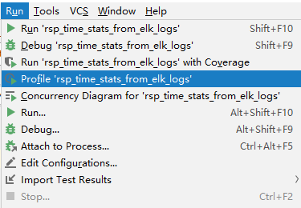
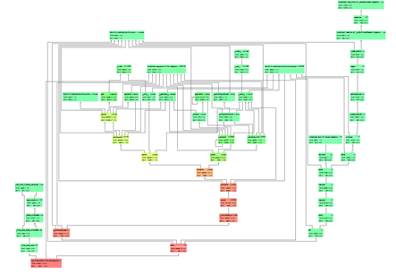
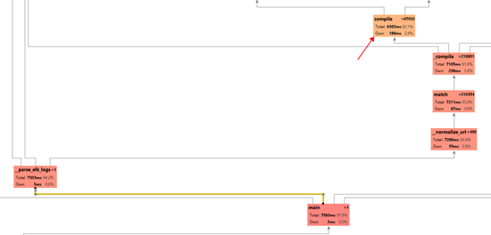
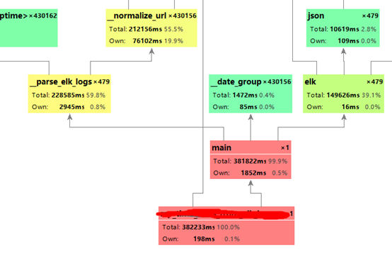

这两天在公司帮老大写一个程序功能，要求抓取从elasticsearch和kibana服务器上返回的数据，统计所有hits的数据字段ret_code为0的hit，并计算其占有率等一些功能。
功能倒是写完交差和合并主分支了，但是后来试运行却发现统计完所有response的数据并且发送报警邮件的整个过程居然要两个小时之久！我想虽然python的性能是比不上java但是也没有这么差劲吧。后来调试发现，原来的程序运行只有六七分钟，我开始怀疑我写的代码巨烂。后来经过调试比对，发现并不是我加进去的代码有问题，而是之前同事写的代码欠缺一部分性能和扩展性的考虑。以下是我的分析过程。
打开pycharm run菜单下的profile选项，利用profile工具对程序运行的性能指标进行计算和分析。

得到的函数调用时间占比图的大体结果如下，我们可以得到每个函数（方框）运行的时间及其在它所调用的其他函数。红色即代表该函数占用整体运行时间的比率太高，说明该函数是整个程序运行的性能瓶颈。反而颜色越绿占比就越小。

我们放大其中红色的部分，我们可以发现所调用的我们自己写的函数__normalize_url函数占用了大部分的运行时间。从函数名知道这是一个对url正则化的函数，其中用到了re模块的match和_compile函数，而最终程序所浪费的时间的关键就在于最后的re中的compile函数。

def __normalize_url(url):
norm_url = re.sub('\?.*$', '', url) if '?' in url else url
for mapping in url_normalization_mappings:
if re.match(mapping[0], norm_url):
return mapping[1]
return norm_url这段代码调用的re.compile()函数看似没有问题，但其中存在一些不足。我们点开re模块的match函数的实现。是对pattern正则字符串进行编译成正则化对象，再对目标string进行匹配。
def match(pattern, string, flags=0):
"""Try to apply the pattern at the start of the string, returning
a match object, or None if no match was found."""
return _compile(pattern, flags).match(string)再来看_compile函数
_cache = {}
_pattern_type = type(sre_compile.compile("", 0))
_MAXCACHE = 512
def _compile(pattern, flags):
# internal: compile pattern
try:
p, loc = _cache[type(pattern), pattern, flags]
if loc is None or loc == _locale.setlocale(_locale.LC_CTYPE):
return p
except KeyError:
pass
if isinstance(pattern, _pattern_type):
if flags:
raise ValueError(
"cannot process flags argument with a compiled pattern")
return pattern
if not sre_compile.isstring(pattern):
raise TypeError("first argument must be string or compiled pattern")
p = sre_compile.compile(pattern, flags)
if not (flags & DEBUG):
if len(_cache) >= _MAXCACHE:
_cache.clear()
if p.flags & LOCALE:
if not _locale:
return p
loc = _locale.setlocale(_locale.LC_CTYPE)
else:
loc = None
_cache[type(pattern), pattern, flags] = p, loc
return p我们发现，_compile函数会设置一个缓存，保存编译过的正则化对象，这样以后我们再想对相同的正则规则字符串进行编译时就可以直接取该对象而不用花时间来重复编译它。而这个缓存对象的个数限制就为_MAXCACHE 即原代码中设置的512。
而原来我们写的程序要匹配的url有496个，而经过后来接口的增加，url增加到了516个，正好突破了缓存的个数限制！然后缓存居然清空了！（如下）
if len(_cache) >= _MAXCACHE:
_cache.clear()也就是说，当我们匹配每一个url时，如果缓存溢出了都要重新编译所有的正则化对象，这无形中浪费了大量的时间。更何况我们要匹配接近十万条的url，这也难怪要要花费两个多小时的时间来运行了，几乎都浪费在了编译正则化对象上。
原本我们可以手动更改_MAXCACHE的大小，但是要跨平台运行，所以我们可以手动自己造一个简单的缓存。
# 缓存器
_url_patterns_max_cache=512 if len(url_patterns)<=512 else (len(url_patterns)/256+1)*256
_url_patterns_cache={}
for url_pattern in url_patterns:
if len(_url_patterns_cache)>_url_patterns_max_cache):
_url_patterns_cache.clear()
url_patterns_cache.update({url_pattern:re.compile(url_pattern)})
# 直接从缓存中取值进行匹配
for url_pattern_key in _url_patterns_cache:
if _url_patterns_cache.get(url_pattern_key).match(url):
return url_pattern_key最后我们只用缓存中的编译好的对象直接进行匹配即可，整个过程每一个规则只用编译一次，极大的节省了时间。~以下是经过优化后的性能表现。总花时382233 ms约为6.37 minutes ，完美解决!

说一点感想，这是我实习第一次要做的任务，虽然没啥难度，也可让我抓耳挠腮了一阵子了。本来都做好了，偏偏又出了这个性能问题，花了我一两天时间排查和改进，其中我还学习了profile工具。不得不说，我还是太年轻了。人生还需要不断地学习和巩固知识。